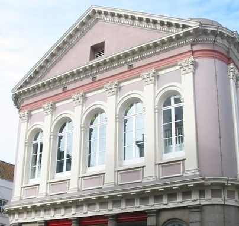

Moussieu l'Editeu
 Quand j'dis à Merrienne Mardi au sé que j'voulais allé en Ville le lende'main pour vais chen tchi s'pâse'sait dans l's Etats, ou dit oui tout-d'suite comme je m'attendais, car ou s'est minse dans la tête que l'année tchi veint y faudra que j'prenne pour Sénateur. J'y si dit pûs d'une fais que j's'y trop vyi, mais tchique imbécile l's asseuthée qu'un Sénateur n'est pas comme un Juré-Justicier et tch'y peut être êlu quand-même il éthait chent ans.
Et don j'pâssit man jour dans chutte gall'lie es Etats et j'en entendit d'pûs d'une sorte. Y'en a tch'y vont à ches pictures pour être amûsés, mais mé j'preféthe l's Etats. Ch'est là qu'nou vait des scènes tchi vos font rithe.
J'm'en r'vint par bus et j'n'avais pas fait dans la maison deux minutes que ne v'la la Merrienne à m'tchéstchoné. 'Eh ben' ous'fit en c'menchant, 'tchèsqu'ous avez fait anniet? Des bétises, sans doute, comme de couôtume?'
'Quant à mé' j'l'y dit, 'j'n'ai fait rein sinon écouté, ch'estentchi n'c'menche pas à m'atchûsé, comme si ch'tait d'ma faute tch'ils ont dêpensé touos ches sous-là.'
'Oh' ou dit, 'ils ont dêpensé des sous! Je m'y attendais. Par chen qu'j'en vait mé, d'nos jours l's Etats siègent tout simplyement pour gaspillyi l'argent du publyie. Aut'fais si un comité voulait une chentaine de louis tchique bouon Connêtablye ou Député d'la campagne se l'vais tout-d'suite pour oppôsé, mais achteu ch'est des milles et des chents milles et personne ne dit un mot. Si chenna continue y faudra que j'y'aille tchique biau jour pour l'vé la Clâmeur de Haro autrément l's Etats f'thont banq'route et tout s'n itha es tchans.'
'Ma pouôre Merrienne' je lî dit, 'j't'ai dit pûs d'une fais que l's Etats n'peuvent pas faithe banq'route, car quand y s'trouvent a court de souos y n'ont qu'a inventé chique taxe pour balanchi l's affaithes. Ch'est ben simple.'
'Ch'est grand dommage' ou s'fit, 'car autrement nou pouôrrait enfreumé toute la dgaingue en prison pur dêtte et s'en dé faithe de chutte manniéthe-la. Mais dis-mé, Ph'lip, ont-y fait aut'chose que d'dépensé nos sous?'
'Oui' j'li dit, 'le Connêtablye de Saint-Sauveux voulait deux Chent'nyis d'extra, mais la Chambre à décidé de r'mettre l'affaithe à un autre jour. Et don la propôsition est louogie au Greffe, avec des dotchûments qu'ont tait la d'pis l'temps d'Adam et Eve. Je n'crai pas que l'sieur Mouothant tant trop content, jugeant pas s'n appathence.'
'Mais pourtchi tchi d'mandait pûs d'Chent'nyis?'
'Parsque y a pûs d'monde dans sa pâraisse au jour d'anniet qu'aut'fais et le Connêtablye considéthe que y a trop d'travas pour deux Chent'nyis.'
'Sans doute' s'fit la Merrienne, 'y a pûs d'monde, avec touos ches Angliais et Irlandais et Polonais et j'n'sais pon tchi. Mais y m'semblye que tout est ben trantchille à Saint-Sauveux d'nos jours. Epis quand-même j'n'en approuve pas mé d'chutte idée d'avé pûs Chent'nyis. A ma veue j'en avons dêja trop, sans pâslé Oficiers de Connêtablye. Je s'sais mé pour aboli toute la police. Y éthait pûs d'liberté.'
'Vêthe' I'li dit, 'et pûs d'crime. Si n'y avait pas d'police pour nos saufgardé et qu'tchique peûle s'en v'nait de niet nos volé, tchèsqu tu f'thas? Ch'est bête de pâslé d'même.'
'Dans un patheil cas' ou dit, 'une bouonne chouque ou un pôqueur vaudrait mûs qu'un Chent'nyi et tout ch'que y éthait à faithe che s'sait d'enfoui l'cadâvre dans la câre d'un clios. Le Chent'nyi Coutanche n'éthait pas à se l'vé dans l'mitan d'la niet et pâssé sans temps à gallopé ichîn et là pour tâchi d'happé l'criminel. Nou sauv'thait les salaithes du Juge de la P'tite Cour et tout l'monde s'saient heutheux.'
'Sinon, p't-être ben, l'cadâvre' je m'fit.
'Nou n'se gène'nait pas d'l'y si tait trais pids souos têrre,' raiponni la Merrienne.
Ph'lip
4 Novembre 1960
Viyiz étout: